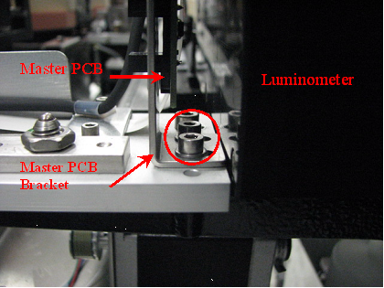
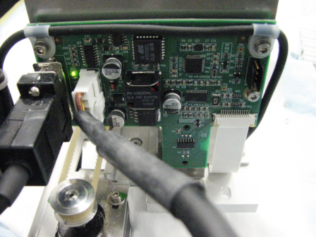
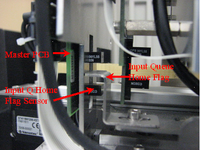
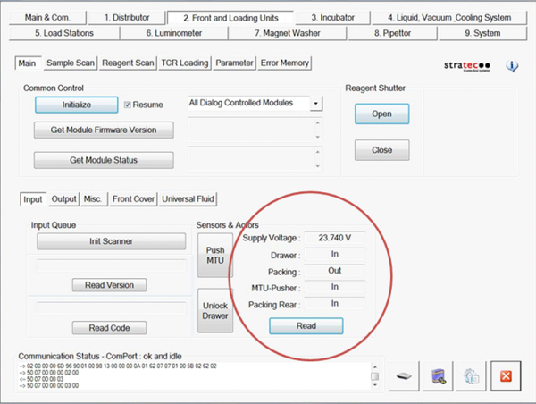
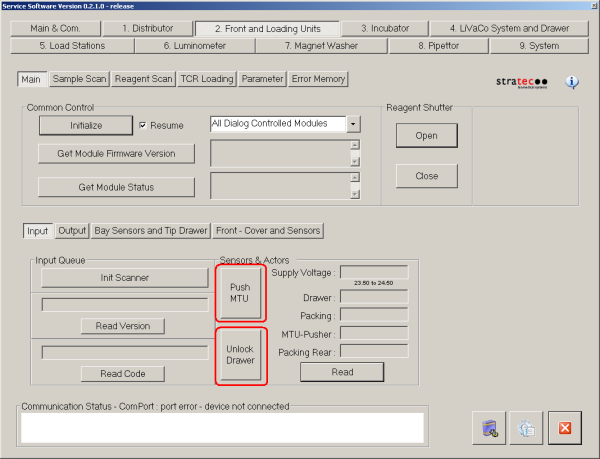

Parts and Materials Required
- Hex key, 2.5 mm
- Hex key, 3 mm
- MTU INPUT Q, MAIN PCB
Time Required
- 50 minutes (does not include re-teaching the Distributor.
Removal Procedure
- Put on proper PPE.
- Remove the MTU Input Queue.
 Locate the master PCB at the back end of the MTU Multi-tube unit—Container used to process tests in the instrument. An MTU contains five separate reaction tubes. The MTU is moved through the instrument by the linear distributor and includes five tiplets for pipettiing to be used in the mag wash station. Input Queue and remove the bracket screws.
Locate the master PCB at the back end of the MTU Multi-tube unit—Container used to process tests in the instrument. An MTU contains five separate reaction tubes. The MTU is moved through the instrument by the linear distributor and includes five tiplets for pipettiing to be used in the mag wash station. Input Queue and remove the bracket screws.
- Disconnect all cables and remove the screws that secure the master PCB to the bracket.

- Remove the master PCB.
Replacement Procedure
- Reverse the removal procedure.
- Verify that all screws are in place.


Verification
- Using Service Software, verify that the drawer sensor reads Out when the drawer is open and In when the drawer is closed.
- Place one or more MTUs into the MTU Input Queue.
- Press Push MTU. Let the module pack and count the MTUs.
- Press Read to get the sensor readings of the MTU Input Queue.
- The Drawer sensor should read In, the Packing sensor should read Out, the MTU-Pusher sensor should read In, and the Packing Rear sensor should read In.

- Press Unlock Drawer. Wait until the drawer unlocks and open the MTU drawer but do not open the drawer.
- Press Read to get the sensor readings of the MTU Input Queue. The Drawer sensor should read In, the Packing sensor should read Out, the MTU-Pusher sensor should read In, and the Packing Rear sensor should read Out.
- Open the MTU Input Queue drawer.
- Press Read to get the sensor readings of the MTU Input Queue. The Drawer sensor should read Out, the Packing sensor should read Out, the MTU-Pusher sensor should read In, and the Packing Rear sensor should read Out.
- Remove all MTUs from the MTU input Queue, including the last MTU that was packed.
- Close the MTU Input Queue drawer and press Push MTU. Let the module attempt to pack and count MTUs.
- Press Read to get the sensor readings of the MTU Input Queue. The Drawer sensor should read in, the Packing sensor should read In, the MTU-Pusher sensor should read Out, and the Packing Rear sensor should read In.
- Using Service Software, verify that the Input Queue is properly able to pack and count MTUs.

- Place a small number of MTUs (1–3) in the MTU Input Queue drawer and press Push MTU to pack.
The software should display the proper number of MTUs in MTU Input Queue.
- Open the MTU Input Queue and insert a few more MTUs.
- Press Push MTU and verify that the number of MTUs displayed by the software is correct.
- Repeat steps b and c until the drawer is full.
- Place a small number of MTUs (1–3) in the MTU Input Queue drawer and press Push MTU to pack.
- Perform a System Level Operational Qualification.
 button at the top of the page to send feedback, comments, or change requests.
button at the top of the page to send feedback, comments, or change requests.{kind=link}